About this Lesson:
In this lesson you will learn what a Peg is and how it is used to animate art. For this lesson, you will animate the character CNote completing a simple walk cycle.
Lesson Duration: 3 hours
Harmony Topics:
-
Peg: A layer/node used to animate movement in Harmony. It has no drawings, but can be attached to drawings, objects and cameras.
-
Transform Tool: Using the Transform tool, you can easily reposition, scale, rotate and even skew layers directly in the Camera view. When positioning a drawing layer using the Transform tool, always make sure the Peg Selection Mode is deselected in the Tool Properties view. Otherwise, it will limit the selection to pegs in the Camera view.
- Element Node: The Element node is at the very core of a scene's structure. An element is a directory in which drawings are stored, which is associated with an Xsheet column indicating when and for how long each drawing is exposed, and which is in turn linked to a layer which indicates the position of the drawings in the scene. The Element node allows you to connect the element to effects, pegs and composites, determining how its drawings are processed and rendered.
-
Node View: In the Node view, you can connect effects and compositing nodes to form a network, also known as a node system. This view is very useful for rigging puppets, creating advanced effects and having a clear view of complex scenes. The organization and order of the nodes determines the flow of data during the compositing process and how your animation elements will be composited.
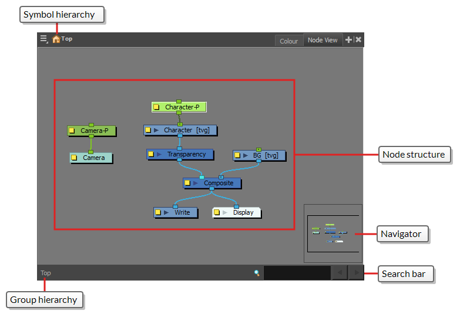
-
Pivot point: Transformations made on a drawing layer, such as rotation, scale, skew and flip, are made relative to the position of the drawing's pivot point. For example, rotating a layer will make it rotate around its pivot point and scaling the layer will make it scale as if its centre was actually its pivot point.
-
Advance Animation Toolbar/Translate Tool: You can use the Translate tool to pan your elements on the X, Y and Z axes and adjust the position of the pivot on a peg layer.
Shortcuts introduced in this Lesson:
-

 CMD+P (macOS) or
CMD+P (macOS) or 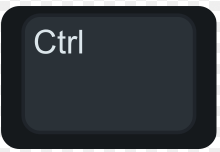
CTRL+P (windows). = Add Peg - F6 = Add Keyframe
-
 CMD+K (macOS) or CTRL+K (windows) = Set Motion tween
CMD+K (macOS) or CTRL+K (windows) = Set Motion tween - CMD+B or CTRL+B = Paste Special
Task:
-
Download the support files (Using Pegs) from the Lesson Files.
- Download and review the assessment rubric found in the Lesson Files.
-
Watch and take notes on the information presented in the What's a Peg video (above) and the topics presented in this lesson.
-
Create your own animated version of CNote walking in Harmony by following the steps presented in the video. Be sure to save and export your Harmony file as: YourName_CNote_Walk in your Documents folder. Be sure to continue to take notes in your sketchbook/notebook on how to use Harmony and any animation terminology as it will help you prepare for your certification exam at the end of this course.
- Unzip the Lesson File into your Documents folder on your computer.
- Launch Toon Boom Harmony, and open Using_Pegs.xstage
- Play, complete and take notes on the What's a Peg video tutorial.
- Open the Node View, next to the Colour View.
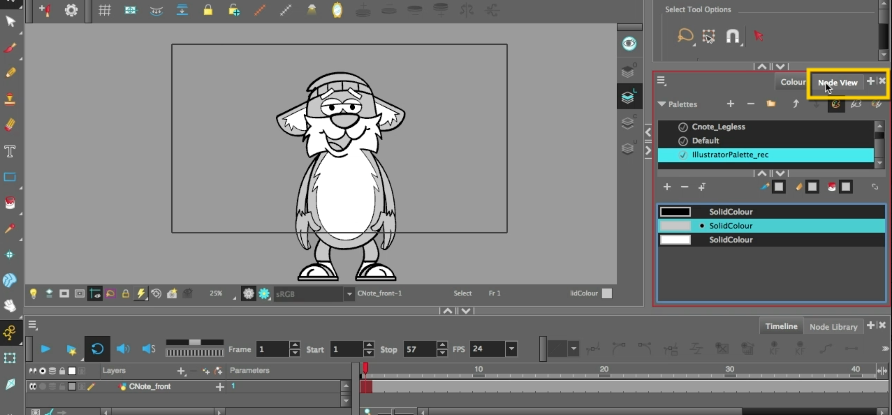
Hint: You can open Node view by selecting the + icon in any View area.
- Note that you find the Layer CNote_front in both the Node View and in the Timeline. Rename the CNote_F in the Timeline, notice it changes the name in the Node Layer as well.
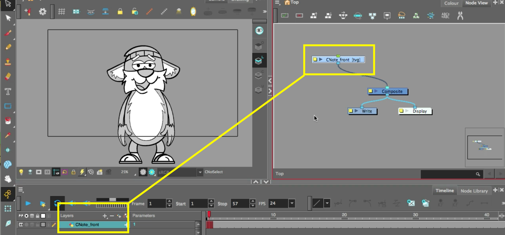
- Make sure Animation Mode is enabled and select the Transform Tool in the Toolbar. CNote will turn purple in colour. This means you are currently working directly on the drawing layer.
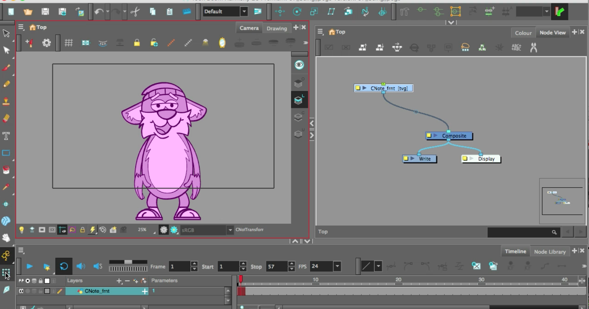
- Select the CNote_F Node layer and press CMD+P (macOS) or CTRL+P (windows) on your keyboard (you can also add a Peg in the Timeline by selecting your layer and clicking Add Peg) to add a Peg.
- When you select the new Peg Node in the Node view, CNote will turn yellow with a yellow bounding box. This means you are working on the Peg.
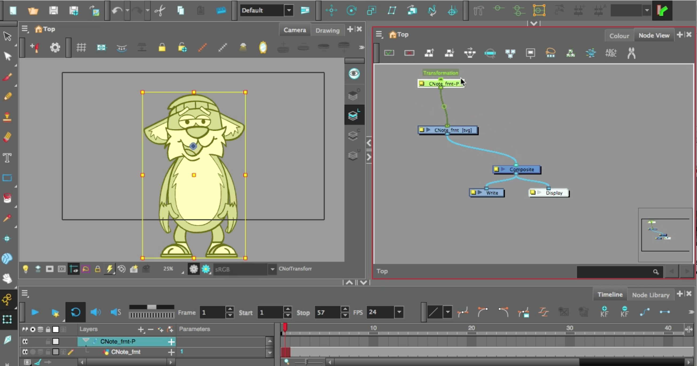
- Go to the Advanced Animation Toolbar and select the Translate tool. You will see an axis marker pointing up (green) and to the side (red). Reposition CNote's Pivot point (blue rotation point) to his belly button.
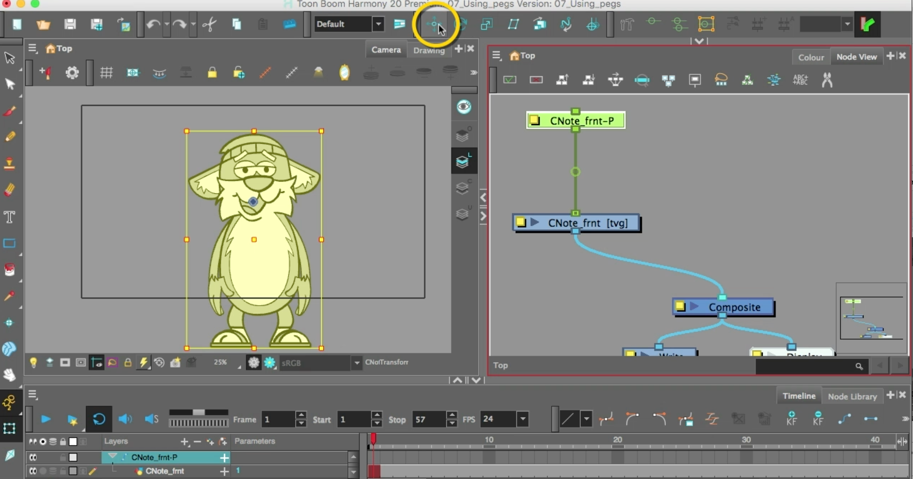
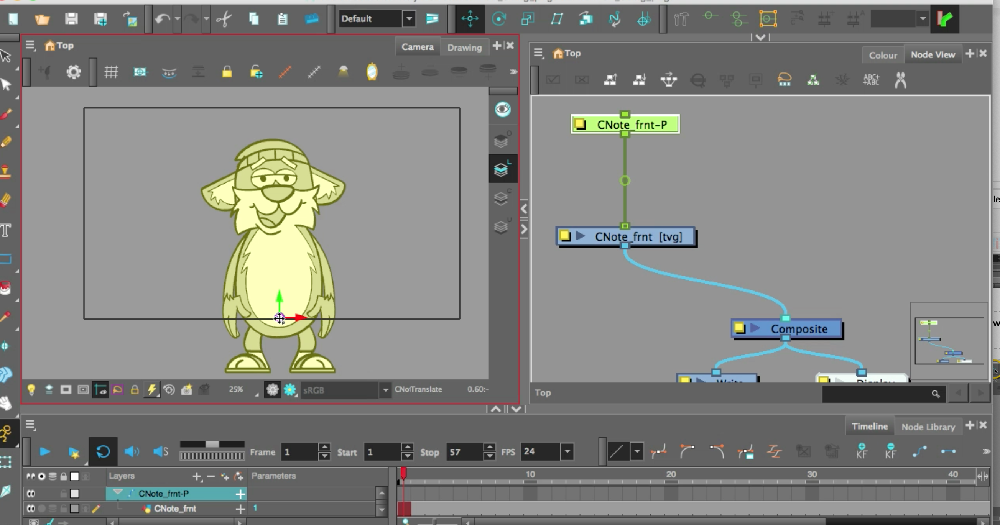
Part 2 - Creating a Legless (Hidden legs) Walk Cycle:
- For this part of the task, you will be making Cnote walk closer to the Camera.
- Note the hierarchy created in the Timeline for CNote and the Peg. The Peg has the CNote art layer collapsed under it, thus the Peg is controlling the artwork.
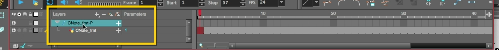
- In your Timeline View, collapse the Peg layer to hide the CNote_F layer.
- Add a Keyframe, by selecting the +KF on the Timeline, on Frame 1 of the Peg layer (Red Square will appear).
- Add a Keyframe by pressing F6 on Frame 15 of the Peg layer (another Red Square will appear).
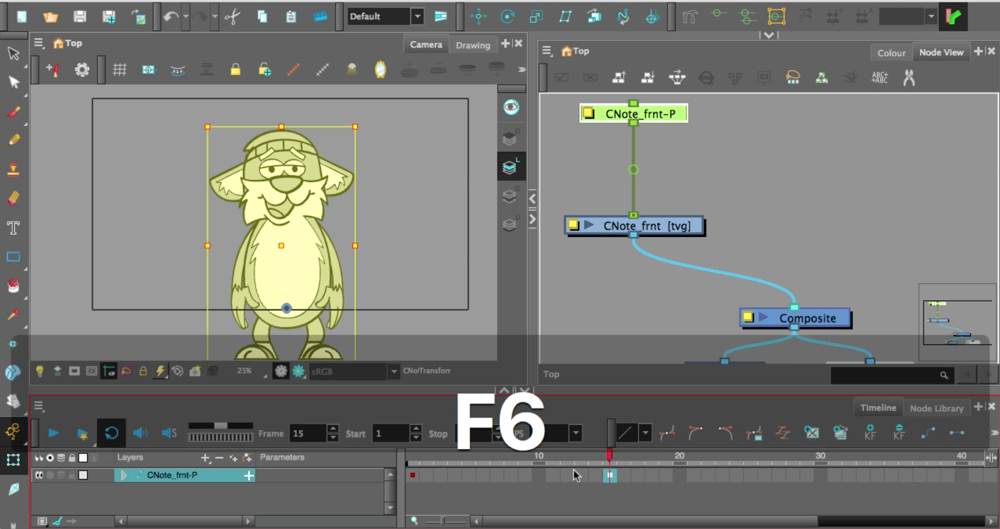
- Select frame 9 and click once on CNote to select the character and activate the Camera View.
- Hold Shift on your keyboard and click the arrow up key once on your keyboard. This will move CNote up approximately 10 pixels.
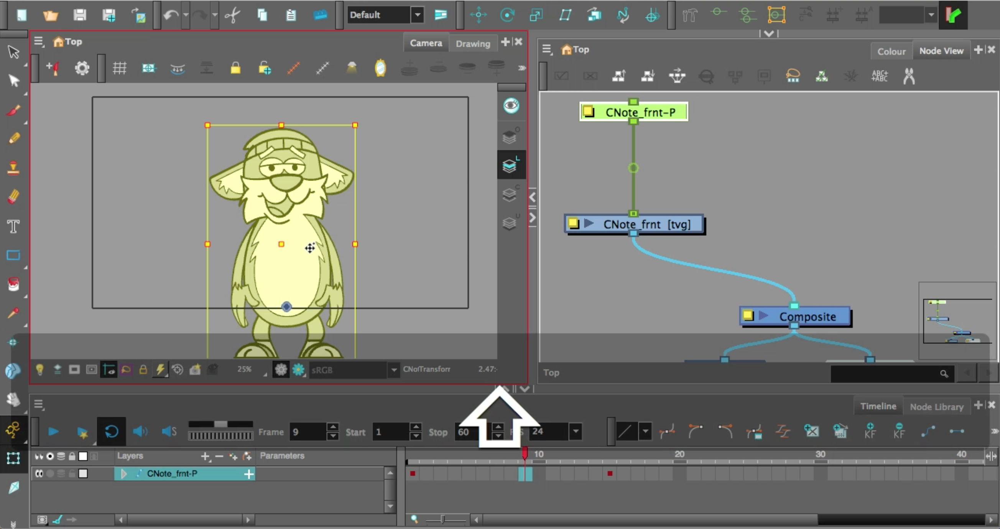
- Note that a Keyframe has been added to frame 9.
- Go to Frame 1, select the Keyframe. Hold Shift and select the Keyframe on frame 15.
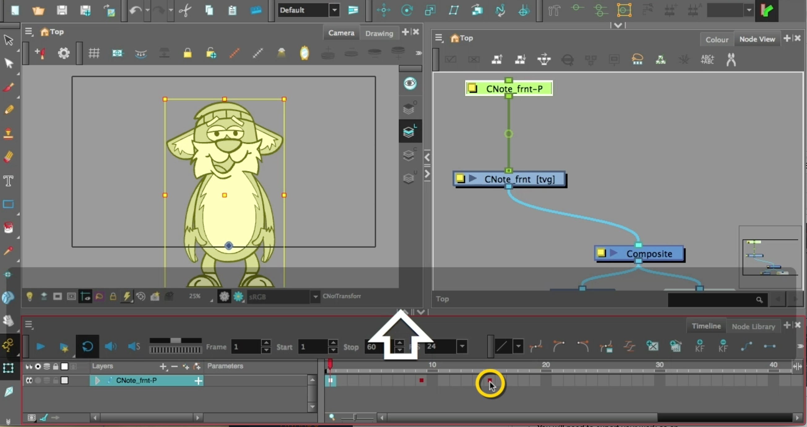
- Press CMD+K (macOS) or CTRL+K (windows) to set Motion tween.
- This will create an automated tween to create all the in-between frames between your Keyframes.
- Press play and watch your animated CNote. CNote should move up and down.
- Select frames 1-15 again. Copy those frames, select frame 16 and press CMD+B or CTRL+B to Paste Special.
- In the Paste Special pop up window change Cycles Normal from 5 to 3.
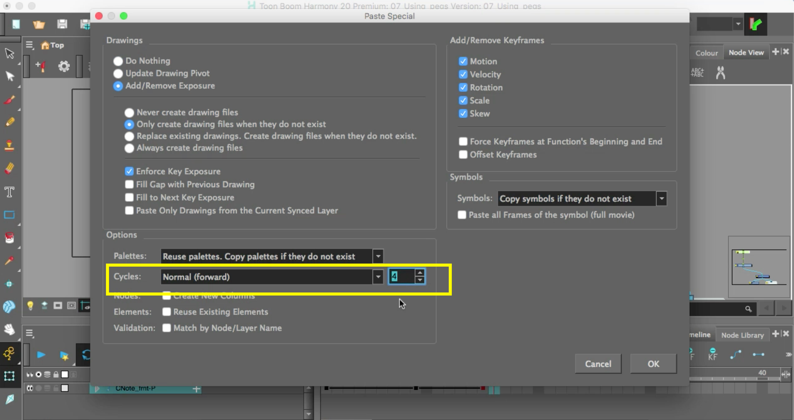
- CNotes' walk cycle should now repeat three times.
- Reposition the Playhead to frame 1.
- Go back to the Peg in Node View and create a new Peg. Rename the new Peg 'CNote_FWD'.
- Make sure the new Peg is attached to your first one.
- The bounding box will change to red, but CNote should still be yellow.
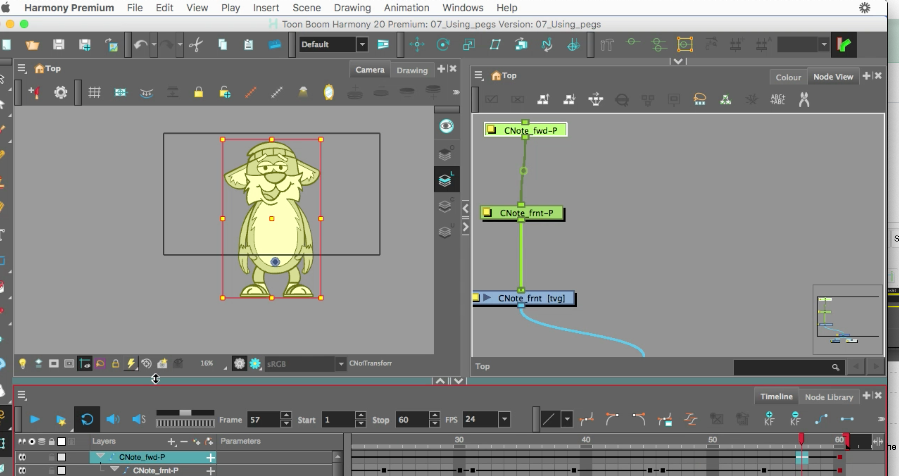
- Reposition the pivot point of the new Peg to the same belly button area.
- In your Timeline, select frame 1 of the 'CNote_FWD' layer.
- Add a Keyframe on frame 1.
- Select the Transform tool. Now go to frame 60 and hold Shift (this will maintain the height to width ratio) and increase his height, but move him down a bit.
- Select all your frames on that new layer and press CMD+K (macOS) or CTRL+K (windows) to create the tween.
- Press Play and watch CNote walk closer to the camera.
- Enable the Camera Mask in the Camera View.
- Add a Colour Card (not in video).
- You will need to export your animation as a movie file as CNote_walk.
- Submit CNote_walk animation.